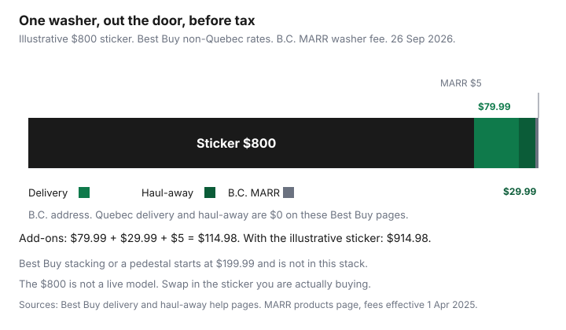

Household Items and Supplies · Canada
How to Buy a Fridge, Washer, or Dryer in Canada Without Overpaying: Timing, Packages, Delivery, and Haul-Away Fees
The number on the fridge is the start of the bill. Delivery, a hookup the driver will not do, haul-away, and a provincial recycling fee are separate lines, and they change by retailer and by province. Price one model number three ways: the sticker, the out-the-door total for your postal code, and the same total if you also need the old machine gone. Then decide.
Operating cost is a different decision. How to read the EnerGuide label is the EnerGuide guide. Whether a heat-pump dryer earns its price is the dryer guide. Cold-water wash cycles, after the machine is in the laundry room, are the laundry guide. This page is the purchase: timing, packages, delivery, and the fees that show up when you pay.
Key takeaways
- Measure the opening and the path, including the elevator if you live in a condo, before you pay for a delivery that cannot finish.
- Best Buy lists scheduled delivery at $79.99 outside Quebec and $0 in Quebec, and delivery-day haul-away at $29.99 outside Quebec and $0 in Quebec. Pages read 26 Sep 2026.
- Costco includes delivery, basic installation, and haul-away on select online appliances, and names what basic installation does not cover.
- Best Buy open-box major appliances are final sale. A new boxed unit is a different return rule, and the delivery page says a major appliance cannot be returned once it is out of the box.
- In B.C., MARR’s fee effective 1 April 2025 is $16 on a full-size fridge and $5 on a washer or dryer. Other provinces use other programs. Name yours at checkout.
Measure, budget, and pick features that actually matter
Measure the alcove, the door swing, and every turn from the truck to the room. Costco’s appliance delivery sheet says the team will not remove windows, hoist the unit, do carpentry, or do electrical work, and that delivery can be stopped if access is not suitable. A refund of the product is not the same as a free second attempt on a day you have already taken off work. If the building needs an elevator booking, that fee and that lead time are the condo move guide. Book the elevator for the delivery window the retailer actually gives you, not for a morning you hoped for.
Write a ceiling that includes the extras, and park the cash in the same kind of named sinking fund you would use for a tax instalment. The method is the sinking-fund guide. Features that change the bill are the ones you will use: the width that fits, a water line you already have, gas versus electric for the dryer, and the EnerGuide number for the size class you are buying. A second ice maker does not belong in the budget until the path, the hookup, and the haul-away are priced.
Costco’s delivery sheet for refrigerators says the team will not connect a water line or an ice maker. Leon’s delivery page says drivers will uncrate and place a major appliance and, for insurance reasons, will not connect it to electrical, plumbing, or gas. If the hookup is the reason you are replacing the machine, the install line is part of the purchase, not a surprise on delivery day.
Where to buy in Canada: big box vs Costco vs appliance specialists vs Leon's/The Brick
Use the same model number everywhere. A “similar” fridge with a different SKU is a different machine. Big-box sites (Best Buy, Home Depot, RONA) publish a product price and then calculate delivery from the address. Costco sells to members and, on its appliances page checked 26 Sep 2026, advertises delivery and basic installation on select appliances, plus haul-away on select appliances, for online purchases. The same footnote says basic installation is not included on dishwashers, gas appliances, drop-in ranges, commercial or built-in appliances, over-the-range microwaves, refrigerator water lines, range hoods, or pedestals and stacking kits bought separately.
Leon's and The Brick are the specialist-showroom path. Leon’s delivery page sends installation to a partner for an additional fee and says old appliances can be moved to the curb one-for-one if they are disconnected, empty enough to be safe, and reasonably clean. The same page says disposal of bedding and appliances is an option for an additional fee, and it marks the one-for-one service as not available in B.C. A Leon’s dryer product page checked the same day advertised free local delivery on orders over $799. Treat that threshold as a product-page claim and confirm it on your order, because the delivery-policy page also says a restocking fee may apply if an unwrapped piece does not fit the doorway you measured.
The Brick’s shipping page asks for a postal code and says delivery is free on orders of $499 and over in Quebec only. Elsewhere the fee is the estimate for that code. Independents do not share one national schedule. Ask for the model, the delivery date, the hookup, and haul-away on one quote. A specialist who will rewrite that quote is the negotiation section below. A website total is the offer until the page changes.
Hidden costs: delivery, install kits, haul-away, eco fees—comparison table
Read the line that matches the job. Best Buy’s washer and dryer delivery page, read 26 Sep 2026, lists scheduled delivery at $79.99 per delivery, with the preferred date chosen at checkout, and no charge for scheduled delivery in urban or remote Quebec unless air delivery is required. The same family’s haul-away page lists removal and recycling at $29.99 outside Quebec and at no additional cost in Quebec, same appliance type, on the delivery date. You disconnect and empty the old unit. The washer and dryer installation page is a different service: stacking or a pedestal starts at $199.99, gas-dryer installation starts at $209.99, and haul-away on the installation day is listed at $99.99. Do not add the $29.99 and the $99.99 together unless you bought both services.
Best Buy’s return policy, read the same day, says most products can be returned within 30 days of the in-store purchase or of online delivery. Refrigerators, washers, and dryers are named as large items that can be returned under that policy’s condition rules. The washer delivery page also says major appliances cannot be returned once they are out of the box. Those two sentences are both on Best Buy help pages. Confirm which one the checkout is applying before the crew opens the carton. Service, delivery, and installation fees are on the non-returnable list. Environmental handling fees are described as refundable. Shipping and handling is non-refundable unless the return is a defect.
| Retailer | Delivery | Install or hookup | Haul-away | Return or restocking | Open box |
|---|---|---|---|---|---|
| Costco | Included on select online appliances. Exclusions in the appliances-page footnote. | Basic install included on those select models. Water line, gas, dishwasher, built-in, and separate stacking kits are named exclusions. | Included on select appliances, online purchases. Old unit must already be disconnected where the delivery sheet says so. | Return FAQ, version 4.0, published 10 Oct 2025: major appliances within 90 days. Countertop microwaves excluded. Big-ticket returns: call the warehouse first. | No separate open-box policy on that FAQ. Ask the warehouse. |
| Best Buy | $79.99 per scheduled delivery. $0 in Quebec, unless air delivery is required. Seven or more large items can change the cost. | Stacking or pedestal from $199.99. Gas dryer from $209.99. A simple electric hose kit was not given a single price on those pages. | $29.99 outside Quebec on the delivery-day haul-away page. $0 in Quebec. Installation-day haul-away is a separate $99.99 on the install page. | General policy: 30 days, with condition rules. Delivery page: no return once the major appliance is out of the box. Delivery and install fees are non-returnable. | Final sale. Not returnable. Schedule delivery within 14 days. Manufacturer warranty can still apply. Lowest Price Guarantee does not apply. |
| Home Depot | Full-service appliance page: delivery and basic hook-up, “some fees may apply.” The dollar is a postal-code quote. | Professional install examples on the kitchen page, starting at: dishwasher $176, refrigerator water line $195, gas range $185. Regional labour. Not a national flat fee. | Offered for an additional flat fee. The dollar was not published on the installation page checked. Disconnect electric units yourself. Do not disconnect gas. | Read the product page for that SKU. This check did not find one national restocking percent for appliances. | Ask in store. Not a published national open-box rule on the pages opened. |
| RONA (ex-Lowe's Canada) | The appliance delivery page describes delivery and install terms. A single national appliance delivery dollar was not in the text retrieved 26 Sep 2026. The $81.99 figure on the general delivery page, including a $2.99 fuel surcharge, is for non-appliance home delivery in most stores. Do not paste it onto a fridge. | Separate install services exist, with their own starting prices by job. The appliance haul-away note is not those install contracts. | Appliance page: one-for-one haul-away included, same type, same address. Not available for appliances sold online only. An existing dishwasher must be disconnected. | Use the appliance terms on that delivery page, not the small-parcel return blurb. | Ask the store. Not stated on the haul-away lines retrieved. |
| Leon's / The Brick | Leon's product page: free local delivery on orders over $799. The Brick: free on orders of $499 and over in Quebec only. Other Brick deliveries are a postal-code estimate. Out-of-town Brick delivery does not include old-appliance removal. | Leon's drivers do not connect electrical, plumbing, or gas. Install is an extra through their partner. The Brick delivery staff are not licensed to disconnect. Install desk: 1-888-933-8786, priced as a quote. | The Brick Appliance Plus+: first appliance removed free, then $15 each. The $15 does not apply in Quebec. One-for-one, major markets, unit already disconnected and clean. Leon's disposal is an additional fee and the one-for-one note says the service is not available in B.C. A single Leon's dollar was not stable across locations on the product page checked. | Leon's: a restocking fee may apply if an unwrapped piece does not fit. The Brick: arrange removal before the delivery date. | Ask the store. Floor models are a conversation, not a rule copied from Best Buy. |
| Independents | Written quote for your address. No national schedule. | Written quote. Ask who pulls a permit for gas. | Written quote, same type, and whether the old unit must be disconnected first. | Put the return window and any restocking percent on the quote. | If it is a scratched or cancelled unit, ask whether the return window is gone before you pay. |
Eco fees are provincial. In British Columbia, the Major Appliance Recycling Roundtable charges an administrative program fee at the till on new appliances. The products page, effective 1 April 2025 and still the version linked there on 26 Sep 2026, lists $16 for a full-size refrigerator, a compact refrigerator, or a freezer, and $5 for a clothes washer or a clothes dryer. MARR says the fee is not a tax and not a refundable deposit. Drop-off of an end-of-life appliance at a MARR site is free. That $5 is the stewardship line. It is not Best Buy’s haul-away charge.
Electronics and small appliances sit under other programs. EPRA’s product-definitions page is the index for its provincial schedules, and those rates are not the MARR fridge fee. Alberta’s electronics program is run by the Alberta Recycling Management Authority, which EPRA points to separately. Ontario producers under the resource-recovery rules can internalize a fee or show an environmental handling fee. The amount on your receipt is the one that counts. If the sticker and the checkout disagree, ask which program the line belongs to before you pay.

Package discounts and 'buy more save more' events
A package is worth it when the out-the-door total for the models you actually need is lower than those models bought apart, after delivery is counted once. If the retailer charges per delivery rather than per address, three appliances on one truck are the point of the bundle. Best Buy says an order of seven or more large items may be repriced for bulk delivery after the order is placed, and you can pay the difference or cancel. A “buy more” event that pushes you over that line needs a second look.
Do not invent a percent the ad did not print. Costco’s appliances page says that buying more than one appliance may qualify you for bundle warranties. Read that as a warranty question, and read the warranty card for each model. A parallel guide will go through extended plans and repair versus replace. This page stops at the instruction to compare the package paperwork with the separate paperwork on the same day. If one model in the package is a different width than the alcove, the package is the wrong purchase even when the headline looks large.
Negotiation that works at appliance specialists (and where it doesn't)
At an independent or a Leon’s or Brick floor, ask for the out-the-door number: model, delivery date, hookup, haul-away, and eco fee. Ask them to match a written price for that model number from a retailer that will actually deliver to your building. If they change the number, the new quote is the offer. If they will not, you still have the other retailer’s checkout.
A posted web price at Costco, Best Buy, or Home Depot moves when the page moves. This guide does not claim those counters will haggle, and it does not claim a typical percent off. Best Buy’s open-box page says the Lowest Price Guarantee does not apply to open-box appliances, so an open-box unit is not a bargaining chip under that policy. Where negotiation fails is anywhere the only number you have is a verbal “we can do better” with no model number and no delivery date. Leave with the paper.
Rebates, warranties, and the final checklist before you pay
Ontario’s Home Renovation Savings program, on the appliances page checked 26 Sep 2026, lists rebates for eligible ENERGY STAR Most Efficient models: $200 for a heat-pump clothes dryer, $75 for a washing machine, $50 for a fridge, $50 for a freezer, $150 for an induction cooktop or range, and $25 for a dishwasher. You need to be a residential customer on the Ontario electricity grid, replacing an existing electric appliance, with a new unit. Used or refurbished units do not qualify. Cornwall Electric customers are excluded because they are on the Hydro-Québec grid. Apply within 60 days of purchase and upload the receipt. The rebate is not a reason to buy a size that does not fit.
The manufacturer warranty is on the card in the box. Costco’s appliances landing page also describes a two-year manufacturer warranty and technical support. Read the card for the model you are buying before you treat that landing-page sentence as every brand. A paid extension is a separate contract. Card purchase protection, if your card has it, is in the card certificate. Québec’s legal warranty of quality is another layer, explained by the Office de la protection du consommateur. It is not the store’s 30-day window and it is not an extended plan. This page is not legal advice. Parallel guides will cover rebates in more depth, extended warranties, Québec’s legal warranty, and repair versus replace. Those are separate decisions from the delivery fee.
Before you pay: the model number matches the quote, the path and the elevator are booked, the fuel type matches the hookup you have, the old unit is disconnected if the haul-away rules require it, the eco-fee line is identified, and the return rule for boxed versus open-box is the one you can live with. If any of those is a shrug, you are not done shopping.
Sources & date stamps
- Costco return-policy FAQ, version 4.0, published 10 Oct 2025, opened 26 Sep 2026: major appliances within 90 days; countertop microwaves excluded.
- Costco.ca appliances page and delivery sheets, 26 Sep 2026: delivery, basic install, and haul-away on select online appliances, with the exclusion list.
- Best Buy Canada help, 26 Sep 2026: washer/dryer and refrigerator scheduled delivery $79.99, Quebec $0; haul-away $29.99 outside Quebec and $0 in Quebec; stacking and pedestal from $199.99; gas dryer from $209.99; installation-day haul-away $99.99; open-box appliances final sale, delivery within 14 days; 30-day general return with the out-of-box sentence on the delivery page.
- Home Depot Canada appliance installation and shipping FAQ, 26 Sep 2026: basic hook-up with some fees; haul-away as an extra flat fee; sample install starting prices.
- RONA appliance delivery page, text retrieved 26 Sep 2026: one-for-one haul-away included, not for online-only appliances. General home-delivery page: $81.99 in most stores including a $2.99 fuel surcharge, for products other than the appliance-specific terms.
- Leon’s delivery and terms pages, and a dryer product page, 26 Sep 2026. The Brick removal page and shipping page, 26 Sep 2026.
- MARR products page, fees effective 1 April 2025, opened 26 Sep 2026: fridge $16, washer $5, dryer $5. EPRA product-definitions page for the separate electronics schedules.
- Home Renovation Savings appliances page, 26 Sep 2026: Ontario rebate amounts and the 60-day application window.
Frequently asked questions
How much are appliance delivery and haul-away fees in Canada?
There is no single national price, so use the postal code at checkout. Best Buy lists scheduled delivery at $79.99 per delivery and $0 in Quebec, and delivery-day haul-away at $29.99 outside Quebec and $0 in Quebec, for the same appliance type. The Brick lists the first appliance free and $15 for each further piece, and that $15 does not apply in Quebec. Costco includes delivery, basic installation, and haul-away on select online models, with exclusions named on its appliances page.
Are appliance package deals worth it?
Only when the same model numbers, bought separately the same day, cost more once delivery is counted the way you would actually pay it. A package that adds a machine you do not need is a larger bill. Costco’s appliances page says buying more than one appliance may qualify you for bundle warranties, which is a warranty note, not a published percent off. Write both out-the-door totals before you treat the event as savings.
Can I negotiate appliance prices in Canada?
Ask a specialist for a written out-the-door price that includes the model, delivery, hookup, haul-away, and any eco fee. A floor quote can be rewritten, while a posted website total changes when that page or a published price-match rule changes. This guide does not name a percent you should expect off. Best Buy’s open-box page says the Lowest Price Guarantee does not apply to open-box products, so get any quote in writing.
Are open-box appliances returnable?
Best Buy’s open-box help page says those appliances are final sale, even though each unit is checked and a manufacturer warranty can still apply. Delivery has to be scheduled within 14 days, and the general return policy also lists open-box, floor-model, and Miele major appliances as non-returnable. A new boxed major appliance is a different row, and the delivery page says a major appliance cannot be returned once it is out of the box. Read both pages before the crew opens the carton.
What fees get added at checkout?
Delivery, a hookup or install, haul-away, a provincial stewardship fee, and sales tax are the usual lines beyond the sticker. In British Columbia, MARR’s schedule effective 1 April 2025 is $16 on a full-size refrigerator and $5 on a clothes washer or dryer, and that fee is not a tax or a deposit. Small-appliance and electronics environmental handling fees are a separate schedule and vary by province. The line on your receipt is the one to ask about.